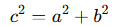

Pitágoras

(Isla de Samos, actual Grecia, h. 572 a.C. - Metaponto, hoy desaparecida, actual Italia, h. 497 a.C.) Filósofo y matemático griego. Aunque su nombre se halla vinculado al teorema de Pitágoras y la escuela por él fundada dio un importante impulso al desarrollo de las matemáticas en la antigua Grecia, la relevancia de Pitágoras alcanza también el ámbito de la historia de las ideas: su pensamiento, teñido todavía del misticismo y del esoterismo de las antiguas religiones mistéricas y orientales, inauguró una serie de temas y motivos que, a través de Platón, dejarían una profunda impronta en la tradición occidental.
Se tienen pocas noticias de la biografía de Pitágoras que puedan considerarse fidedignas, ya que su condición de fundador de una secta religiosa propició la temprana aparición de una tradición legendaria en torno a su persona. Parece seguro que fue hijo del mercader Mnesarco y que la primera parte de su vida transcurrió en la isla de Samos, que probablemente abandonó unos años antes de la ejecución del tirano Polícrates, en el 522 a.C. Es posible que viajara entonces a Mileto, para visitar luego Fenicia y Egipto; en este último país, cuna del conocimiento esotérico, Pitágoras podría haber estudiado los misterios, así como geometría y astronomía.
Teorema de Pitágoras.
El teorema básico de los triángulos rectángulos es el Teorema de Pitágoras, una de las relaciones más fundamentales en la geometría. Este teorema establece una conexión entre los lados de un triángulo rectángulo.
Enunciado del Teorema de Pitágoras
En un triángulo rectángulo, el cuadrado de la longitud de la hipotenusa (el lado opuesto al ángulo recto) es igual a la suma de los cuadrados de las longitudes de los catetos.

c: Hipotenusa (el lado más largo del triángulo).
a,b: Catetos (los dos lados que forman el ángulo recto).
Demostración del Teorema de Pitágoras
Existen múltiples demostraciones del teorema. Una de las más conocidas utiliza áreas:
Dibuja un cuadrado grande de lado ccc, que contiene cuatro triángulos rectángulos idénticos con catetos a,b y una hipotenusa c.
Calcula el área del cuadrado de dos maneras:Como  , ya que el lado del cuadrado es c.
, ya que el lado del cuadrado es c.
Como la suma de las áreas de los cuatro triángulos más el área de un cuadrado interior de lado a−b.
Igualando las dos expresiones, llegamos a 
Aplicaciones del Teorema de Pitágoras
Cálculo de distancias:Se usa para encontrar la distancia entre dos puntos en el plano cartesiano.
Altura de objetos:Permite calcular alturas o distancias inalcanzables de manera directa (como edificios o montañas).
Diseño y construcción:Es crucial en ingeniería y arquitectura para garantizar estructuras rectangulares y diagonales.
Ejemplo práctico
En un triángulo rectángulo, los catetos miden a=3 cm, b=4 cm. Encuentra la hipotenusa c.
Solución: Aplicamos el Teorema de Pitágoras: